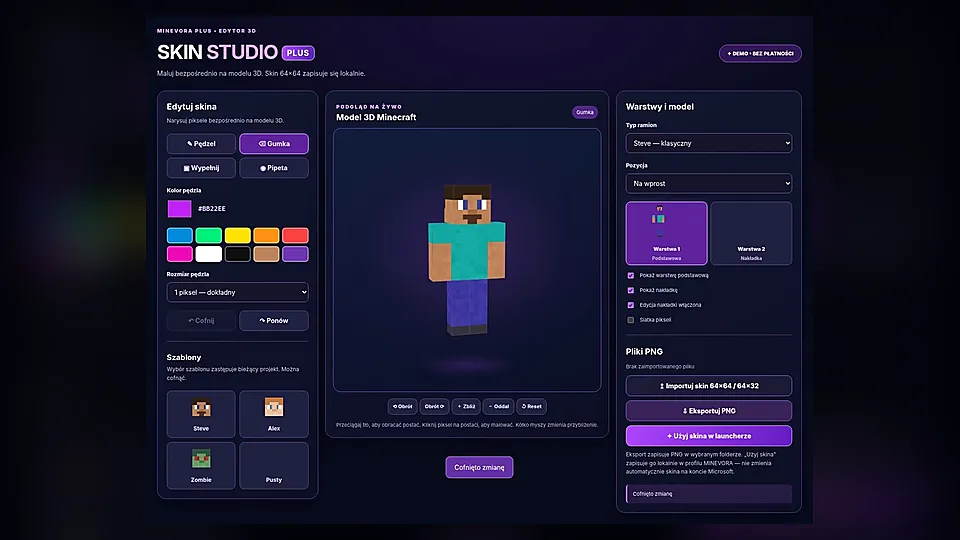

Start i profile
Oddzielne instancje, wybór wersji Minecraft Java, kopie zapasowe, ulubione, przejrzystsze karty i kompaktowy układ.
MINEVORA 3.0.25 łączy Minecraft Java, modpacki, Skin Studio i PvP Studio. Nowy mod PvP HUD 2.0.15 dla Fabric 1.21.1 dodaje serduszka nad graczami i przesuwane kafelki. Prawy Shift otwiera menu moda, a H ukrywa lub pokazuje HUD.
Najnowszy projekt desktopowy: 3.0.25. Publiczne wydania GitHub nadal obejmują starszą linię 18.3.7 — sprawdź numer pobieranej paczki.
Każda funkcja ma własny ekran w aplikacji. Biblioteka dodatków, instalacje, edycja skina i zarządzanie profilami nie muszą być osobnymi programami.
Oddzielne instancje, wybór wersji Minecraft Java, kopie zapasowe, ulubione, przejrzystsze karty i kompaktowy układ.
Przeglądanie katalogów Modrinth i CurseForge, filtrowanie i instalowanie kompatybilnych dodatków.
Shadery, resource packi i datapacki w osobnych kategoriach, przypisane do właściwych profili i światów.
Obracany podgląd postaci, biblioteka skinów, edycja tekstur 64×64 i eksport PNG.
Logowanie w launcherze i powiązanie konta Minecraft. Autoryzacja odbywa się w aplikacji Windows.
Serduszka nad graczami, niezależne pozycje kafelków FPS, CPS, Combo, mikstur i pancerza. Mod Fabric 1.21.1 jest dostępny jako osobne wydanie.
Kontrola plików Minecraft, raporty błędów i pomoc w przywracaniu sprawności instancji.
Odzyskiwanie usuniętych instancji ze światami i modami, bezpieczniejsze zarządzanie profilami.
Nowe MINEVORA PvP HUD 2.0.15 dla Minecraft Fabric 1.21.1 wyświetla serca nad postaciami i pozwala rozmieszczać kafelki tak, aby nie zasłaniały gry. Mod jest udostępniany osobno od launchera 3.0.25.
To osobny plik JAR moda Fabric 1.21.1, a nie instalator launchera. Przed instalacją sprawdź zgodność profilu i zainstaluj Fabric API.
Podgląd interaktywny: przeciągnij kafelki myszką lub palcem, aby zmienić ich pozycję; strzałki przesuwają zaznaczony kafelek. To wyłącznie demonstracja na stronie. W grze edytor otworzysz prawym Shiftem → HUD → PRZESUŃ KAFELKI.
W MINEVORA 3.0.25 dodano dwa motywy, kompaktowe karty oraz możliwość ograniczenia efektów animacji. Zmiany zapisujesz w ustawieniach aplikacji Windows.
Intensywne fiolety, świetlne obramowania i bardziej wyraziste przyciski.
Stonowane odcienie i spokojniejszy kontrast na co dzień.
Mniejsze karty profili, wygodniejsze korzystanie z launchera na węższych ekranach i opcja wyłączenia animacji.
Przyciski nad makietą u góry zmieniają jedynie podgląd na stronie. Aby zmienić wygląd prawdziwego launchera, użyj w Windows: Ustawienia → Wygląd i płynność.

Twórz własne skórki Minecraft i zapisuj je lokalnie. Wybieraj z biblioteki, obracaj postać w podglądzie 3D i edytuj teksturę piksel po pikselu.
MINEVORA 3.0.25 jest najnowszym projektem roboczym launchera. Nie opublikowano go jeszcze w GitHub Releases. W publicznych wydaniach znajduje się starsza paczka 18.3.7 — przed pobraniem sprawdź jej numer.
Przycisk GitHub prowadzi obecnie do wydania 18.3.7, a nie do wersji 3.0.25. Nie udostępniamy fałszywego linku do aktualizacji. Nowy projekt został przygotowany osobno jako paczka robocza.
Nie wyłączaj zabezpieczeń Windows, aby uruchomić niezweryfikowany program. Sprawdź README i źródło pliku ZIP.
Wybierz dostępne wydanie ZIP z GitHub Releases i zapoznaj się z opisem wersji.
Rozpakuj archiwum do nowego folderu i przeczytaj README dołączone do wydania.
Uruchom skrypt z archiwum, wybierz profil, wersję Minecraft i zaloguj konto Microsoft.
Dołącz do społeczności MINEVORA. Znajdziesz tu aktualności o launcherze, dyskusje o PvP Studio oraz miejsce na pomysły i zgłoszenia błędów.
Dołącz do DiscordaOficjalny link zaproszenia: discord.gg/M2fZVJBCqh